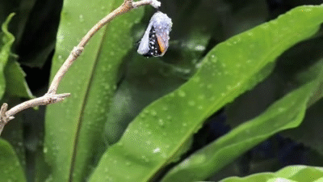

Essa borboleta deve seu nome a Apolo, o deus da luz dos antigos gregos.
Existem na Europa, Ásia e América do Norte mais ou menos 30 espécies dessa borboleta.
É encontrada com freqüência nas montanhas estando adaptada para sobreviver a baixas temperaturas pois tem o corpo coberto por um "casaco de pele" de finos pelos.
Só uma espécie desta borboleta é encontrada em altitudes baixas. Suas asas são grandes em relação ao corpo, de modo a absorver maior quantidade de luz solar. Mede de 5 a 10 cm.
Suas asas tem uma coloração amarelo-pálido ou branco com manchas escuras.
Ciclo de vida
A borboleta Apolo passa por um ciclo de vida típico das borboletas.
As fêmeas depositam os ovos em plantas hospedeiras específicas, que geralmente são
encontradas em áreas abertas e ensolaradas.
As lagartas se alimentam dessas plantas até atingirem a fase de pupa.
Depois disso, surge uma borboleta adulta.

Infelizmente, a borboleta Apolo tem enfrentado desafios devido à perda de habitat,
combustível e mudanças climáticas.
Esses fatores ficaram para a redução de suas populações em algumas áreas.
No entanto, em muitos países, as medidas de conservação estão sendo integradas para
proteger essa espécie e seu habitat.